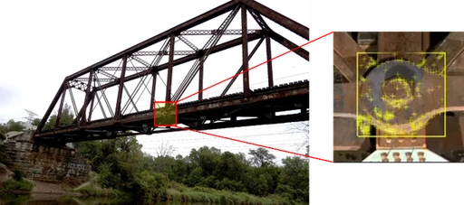
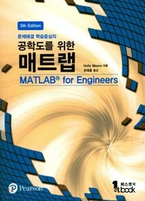
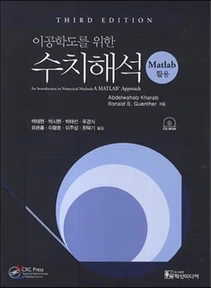
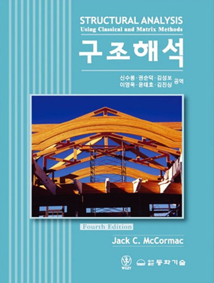
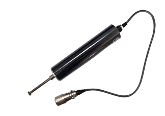
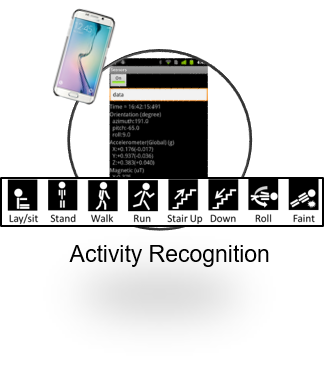
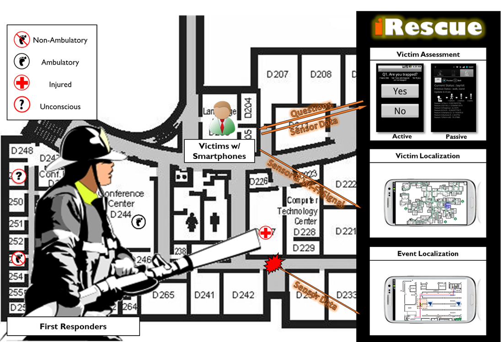

UNDERGRADUATE COURSES

구조역학 (STRUCTURAL ANALYSIS)
구조역학은 정역학과 응용역학의 이론을 바탕으로 하여 정정 구조해석(하중에 따른 반력, 전단, 모멘트, 응력, 변형, 처짐 등)의 문제에 대해 연구하는 과목이다. 즉, 보, 트러스, 아치, 프레임 등의 구조물의 역학적 특성을 연구하는 학문이며 나아가 재료의 처짐과 처짐각법, 모멘트 분배법 등을 이용한 구조해석, 매트릭스해법과 유한 요소법과 같은 진보된 구조해석법의 기초를 제공한다.
- 2018년도 2학기
- 2019년도 2학기
- 2020년도 2학기
- 2021년도 2학기
- 2022년도 2학기
- 2023년도 2학기
- 2025년도 2학기

공학프로그래밍 (ENGINEERING PROGRAMMING)
Matlab 이나 Python등 공학에서 보편적으로 활용되는 프로그램의 사용법을 익히고 프로그래밍 언어의 문법 및 기본적인 이벤트처리, 다양한 컨트롤의 사용법 등을 이론과 실습을 통하여 익히도록 하여 수치해석 등에 유용할 수 있는 프로그래밍 능력이 향상되도록 한다.
- 2019년도 1학기
- 2020년도 1학기
- 2021년도 1학기
- 2022년도 1학기
- 2023년도 1학기
- 2025년도 1학기
- 2026년도 1학기

수치해석 (NUMERICAL ANALYSIS)
공학시스템 해석을 위한 전산지향 수치해석기법 학습, 미분방정식, 선형대수방정식, 보간법, 수적분, 비선형방정식 최적화 등을 학습한다.
- 2018년도 1학기
- 2019년도 1학기
- 2019년도 2학기
- 2020년도 2학기
종합토목설계 (CIVIL CAPSTONE DESIGN)
종합토목설계는 인간이 생활을 영위해가는 모든 공간을 설계하는 것으로서 인간생활에 필요한 주택, 산업단지를 비롯해서 생태환경단지까지 폭넓은 영역을 확보하고 이에 따른 단지설계, 택지개발설계, 토지구획정리설계, 공유수면매립설계 도로, 항만, 수문학, 지반, 구조설계 등에 대한 이론과 실습을 병행하는 학문이며, 최근에는 환경오염 및 피해로 인한 환경 친화적인 설계의 필요성이 더해가고 있으므로 이에 대한 방법에 대해 강의한다.
- 2018년도 2학기
- 2019년도 2학기
전산구조해석 (MATRIX STRUCTURAL ANALYSIS)
건설 구조물은 일반적으로 뼈대, 판 및 고체요소로 구성되고 있다. 이들은 자중과 외력을 받아 복잡한 거동하게 되는 바, 최근 개인용 컴퓨터의 성능향상으로 이들 거동해석을 위하여 전산구조해석을 위한 소프트웨어가 많이 개발되어 있다. 이와 같은 소프트웨어들 중 최근 국내에서 개발되어 많이 사용되고 있는 MIDAS의 전산구조해석 프로그램을 이용하여 여러 가지 건설 구조물을 해석하기 위한 입력데이터와 출력데이터를 이해하고 활용하여 구조물 설계에 이용할 수 있는 능력을 갖추도록 배려한다.
- 2018년도 1학기
GRADUATE COURSES
전산구조해석 (MATRIX STRUCTURAL ANALYSIS)
토목공학특론- 2018년도 2학기
구조물 동적 시뮬레이션 (Structural Dynamics and Simulation)- 2019년도 1학기
- 2020년도 2학기
- 2019년도 2학기
- 2021년도 1학기
- 2022년도 2학기
- 2025년도 2학기
- 2020년도 1학기
- 2021년도 2학기
- 2026년도 1학기
- 2022년도 1학기
- 2023년도 2학기
- 2025년도 1학기
- 2023년도 1학기
GRADUATE COURSES

CEE3202 STRUCTURAL ANALYSIS
As a first course in structural engineering, this class provides an introduction to structural concepts, as well as an overview of specific techniques for analyzing trusses, determinate and indeterminate beams, and small frame structures. Structural analysis involves the application of concepts from statics and mechanics of materials to determine internal forces and deflections of structural members and systems.
Fall, 2016
Spring, 2017
Fall, 2017
Spring, 2018
CEE5250/CS5090 SPECIAL TOPICS:
MOBILE AND VISUAL SENSING FOR ENGINEERING APPLICATION
This course exposes students to ongoing research in mobile and visual sensing, i.e., techniques, algorithms, and systems that leverage the sensors in smartphones, cameras, drones, and other Internet of Thing (IoT) devices, to deliver real-world engineering applications. The course will teach students some popular/useful analytical techniques and then show the application of these techniques to real systems. Example applications includes but not limited to:



and other topics for mobile and visual sensing such as
• Indoor Localization
• Dead Reckoning
• Object Detection
• Structure from Motion (SfM)
: Constructing 3D Model from Multiple Images
Prerequisite:
• Linear Algebra (MA2321, MA2330, or equivalent)
• Probability (CEE3710, MA3710, or equivalent)
Scheduled Fall, 2018